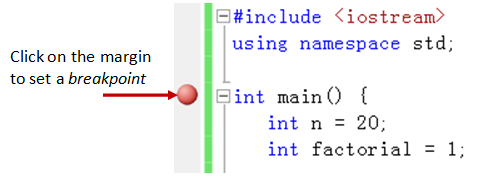
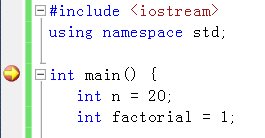
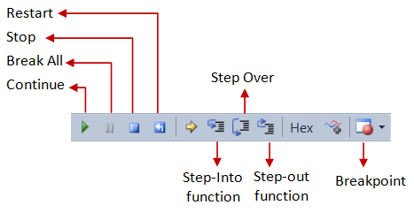
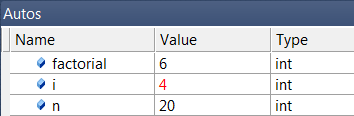

Introduction
Visual C++ is part of the Visual Studio Programming Suite. A light express version is freely available.
Visual Studio is an Integrated Development Environment (IDE) for developing web applications, client applications, and Windows Phone mobile applications. It supports C/C++, C#, Visual Basic. The versions are:
- Visual Studio 97: First version bundling many programming tools.
- Visual Studio Version 6 (1998): Compiled into native executable machine codes (Win32) only.
- Visual Studio .net 2002/2003 (Version 7): Introduced the so-called managed codes on Common Language Runtime (CLR), and C#. Managed codes run over a virtual machine known as .NET Framework. It uses a portable virtual machine code called Common Intermediate Language (CIL). CLR, .NET Framework, CIL and C# are similar to Java Runtime, Java Virtual Machine, Java portable byte codes, and Java language.
- Visual Studio 2005 (Version 8): .NET Framework 2.0, ASP.NET 2.0, ADO.NET 2.0 (for database support), etc.
- Visual Studio 2008 (Version 9): .NET Framework 3.5.
- Visual Studio 2010 (Version 10): .NET Framework 4.0.
- Visual Studio 11 (Version 11): upcoming.
How to Install Visual C++ 2010/2008 Express
Simply download and run the VC++ Express online installer @ http://www.microsoft.com/visualstudio/en-us/products/2010-editions/visual-cpp-express. Choose the "Express" instead of "Professional Trial" version.
Write Your First C++ Program in VC++ 2010/2008
Step 0: Launch Visual C++
The "Start Page" appears. Take a good look at the "Start Page" before you proceed.
(For Visual C++ 2010 Express) Switch to "Expert Settings"
From "Tools" menu ⇒ "Settings" ⇒ Check "Expert Settings".
Step 1: Create a New C++ Project and Solution
Visual studio applications are organized in solutions and projects. A solution consists of one or more related projects (e.g., an exeutable program and its related DLL). A C++ project consists of program codes, headers, and relevant resources.
- Select "File" menu ⇒ "New" ⇒ "Project...".
- The "New Project" dialog appears:
- In the "Installed Templates" (or "Project Types" in VC2008) pane, expand "Visual C++" node and select "Win32".
- In the middle pane (or "Templates" in VC2008), select "Win32 Console Application".
- In the "Name" field, enter "
Hello" as the project name. - In the "Location" field, choose your working directory, for example, "
d:\myproject". - In "Solution" (if there is one), select "Create New Solution".
As mentioned, a solution consists of many related projects. By default, the solution name is the same as the first project in the solution. Accept the default. You can add more projects into this solution later. - Check "Create directory for solution".
- Click "OK".
- The "Win32 Application Wizard" appears:
- Click "Next".
- In "Application type", select "Console application" (the default).
- In "Additional options", select "Empty project".
- Click "Finish".
Step 2: Write a C++ Program
- In the "Solution Explorer" pane (the leftmost pane), expand the "
hello" project node ⇒ Right-click on "Sources Files" ⇒ "Add" ⇒ "New Item...". - The "Add New Item" dialog appears.
- In the "Installed Templates" pane, expand the "Visual C++" node and select "Code".
- Select "C++ File(.cpp)".
- In the "Name" field, enter "
hello" as the filename - Click "Add".
- In the editor pane for "
hello.cpp", enter the following C++ codes:#include <iostream> using namespace std; int main() { cout << "Hello, world!" << endl; }
Step 3: Build (Compile and Link) the Project
From the "Build" menu, choose "Build Solution" (or press F7) to compile and link the program.
Step 4: Run the Project
From the "Debug" menu, select "Start Without Debugging" (or press Ctrl-F5) to run your project. You should see the "Hello, world!" message displayed on the console.
Next:
- Each C++ program has to be kept in a separate project. For toy programs, you could put the new project under an existing solution. For production, a solution shall only contain related projects.
- To add another project under this solution "Hello", right click on the solution (on the Solution Explorer) ⇒ Add ⇒ New Project. Follow the above steps to create the project.
- To build and run the new project:
- right-click on the project ⇒ Set as StartUp Project.
- Right-click on the project ⇒ Build.
- To run the project: from the "Build" menu, select "Start Without Debugging".
Read the Documentation
- At a minimum, you should spend sometimes to browse through the "Getting Started" section on the "START PAGE" (the initial page when the Visual Studio is launched). There are video links as well as tutorials. This will save you many hours of struggling later.
- "Visual C++ Guided Tour" @ http://msdn.microsoft.com/en-us/library/ms235630.aspx.
Debugging C++ Program in VC++ 2010/2008
Able to use a graphics debugger to debug program is crucial in programming. It could save you countless of hours guessing on what went wrong.
Step 0: Write a C++ Program
Follow the steps in "Writing C++ Program" to write the following C++ program, to be used for the debugging practice. This program computes and prints the factorial of n (=1*2*3*...*n). The program, however, has a logical error and produce a wrong answer for n=20. (It outputs "The Factorial of 20 is -2102132736" - a negative number?!).
1 2 3 4 5 6 7 8 9 10 11 12 13 |
#include <iostream>
using namespace std;
int main() {
int n = 20;
int factorial = 1;
// n! = 1*2*3...*n
for (int i = 1; i <= n; i++) {
factorial *= i;
}
cout << "The Factorial of " << n << " is " << factorial << endl;
}
|
Run the program and observe the output produced:
The Factorial of 20 is -2102132736
Let's use the graphic debugger to debug the program.
Step 1: Set an Initial Breakpoint
Set an initial breakpoint at main() function by clicking on the "left-margin" of the line containing main(). (Alternatively, you can place the cursor on the line containing main(), and select the "Toggle Breakpoint (F9)" from the "Debug" menu). A red circle appears indicating a breakpoint has been set at that line. A breakpoint suspends program execution for you to examine the internal states.
Step 2: Start Debugging
From "Debug" menu, select "Start Debugging". The program begins execution but suspends its execution at the breakpoint, i.e., main(). An yellow arrow (as shown in the diagram) appears and points at the main(), indicating this is the next statement to be executed.
Step 3: Single-Step and Watch the Variables and Outputs
 Click the "Step Over" button on the "Debug" toolbar (or select "Step Over (F10)" in "Debug" menu) to single-step thru your program. At each of the step, you could examine the internal state of your program, such as the value of the variables (in the "Auto" or "Locals" pane), the outputs produced by your program (in the console), etc.
Single-stepping thru the program and watching the values of internal variables and the outputs produced is the ultimate mean in debugging programs - because it is exactly how the computer runs your program!
Step 4: Breakpoint, Run-To-Cursor, Continue and Stop
As mentioned, a breakpoint suspends program execution and let you examine the internal states of the program. To set a breakpoint on a particular statement, click the left-margin of that line (or select "Toggle Breakpoint (F9)" from "Debug" menu).
The "Continue (F5)" resumes the program execution, up to the next breakpoint, or till the end of the program.
Single-stepping thru a loop with a large count is time-consuming. You could set a breakpoint at the statement immediately outside the loop (e.g., Line 12 of the above program), and issue "Continue" to complete the loop.
Alternatively, you can place the cursor on a particular statement, right-click and select "Run-To-Cursor (Ctrl-F10)" to resume execution up to this line.
The "Stop Debugging" ends the debugging session. Always terminate your current debugging session using "Stop" or "Continue" till the end of the program.
Important: I can's stress more that mastering the use of debugger is crucial in programming. Explore the features provided by the debuggers.
Other Debugging Features
Modifying the Value of a Variable: You can modify the value of an internal variable by entering a new value in the "Locals" or "Autos" panes. This technique is handy for modifying the behavior of a program, without changing the source code and rebuild.
Step-Into and Step-Out: To debug a function, you need to use "Step-Into (F11)" to step into the first statement of the function. ("Step-Over" runs the function in a single step without stepping through the statements within the function.) You could use "Step-Out (Shift-F11)" to return to the caller, anywhere within the function. Alternatively, you can set a breakpoint inside a function.
Notes on Visual Studio IDE
- Visual Studio organized your work in solution and project.
- A project is a single built-target, e.g., a executable program, a DLL (Dynamic Link Library), a static library, etc. A project contains 3 folders: source files, header files, resource files (icons, cursors, bitmaps, etc).
- A solution can contain many related projects, that are meant to run together to provide a complete solution (e.g., a client-server based application). By keeping the related projects in a solution, the IDE can help to keep track of the dependencies between projects, and re-build the entire solution if certain part of a project changes.
- To create a new project (and implicitly create a new solution): select "File" menu ⇒ "New" ⇒ "Project", select "Create New Solution" and check "Create directory for solution". By default, the name of the solution folder is the same as the first project created under the solution. You may choose a different name for the solution instead. You can add more projects into a solution later (by right-clicking on solution's name ⇒ "Add" ⇒ "New Project..."). You can choose to build only a particular project instead of the entire solution (right-click on the project ⇒ Project Only ⇒ Build project). If there are more than one project in a solution, you need to set a "Startup" project (right-click the project ⇒ "Set as startup project" - the start-up project will be shown in bold). Running the solution begins at the startup project.
Tips and Tweaks
- "Auto-hide" all the panels (Solution Explorer, Output, etc), while you are editing your program (so that you have a bigger screen to work on.) (Visual Studio does not allow you to switch the editor panel to full screen like Eclipse or NetBeans?!)
- It is very complicated to rename a project directory and the project name. The steps are:
- Close the Visual Studio.
- Rename the project directory (using Windows Explorer).
- Start the Visual Studio, and ignore all the warning messages.
- In the Solution Explorer, select a "unavailable project". Click the "Property Manager" icon (on the top-left corner of the Solution Explorer) to display the "Property" panel.
- Set the "File Path" to the new directory location.
- Select the "unavailable project" again, choose "Reload".
- Go back to the "Property" panel, rename the "project name" and "namespace".
Alternatively, you can remove the project from Visual Studio, rename the project, and add the project into the Visual Studio again.
Another alternatively, you can rename the project directory, and edit the "
.sol" configuration file.Read http://www.platinumbay.com/blogs/dotneticated/archive/2008/01/01/renaming-and-copying-projects-and-solutions.aspx on many other tasks such as renaming and copy project/solution. ( I am still wondering why is it so difficult to rename a project directory in Visual Studio, compared to Eclipse or NetBeans refactoring).
- You can choose the compile the code without linking via "Build" menu ⇒ Compile (Ctrl-F7). You can choose to compile/link a project (instead of the entire solution) via "Build" menu ⇒ "Build project-name".
- Figure out the various options in "find/replace" will save you many hours of typing. (Is there a refactoring facility in Visual Studio for renaming entities?!)
File IO in VC++
Suppose that your program receives input from a text file called "xxxx.in", and writes its output to a text file called "xxxx.out" (e.g., the USACO training site, where "xxxx" is the name of the problem).
File Input is a little tricky under VC++ due to:
- When you create a text file in Notepad and saved it as "
xxxx.in", Notepad will append the ".txt" to your file and it becomes "xxxx.in.txt". Worse still, the Windows' Explorer, by default, will not show the ".txt" extension (instead it shows a txt file icon). (The first thing I always do to an alien Windows is to change this setting. From "Tools" menu ⇒ Folder Options... ⇒ View ⇒ Uncheck "Hide extensions for known file types".) You need to put a pair of double quotes aroundxxxx.into override the default ".txt" extension. This is one good reason not to use Notepad for programming at all. You should use VC++ to create the input text files directly. - Which directory to keep the input file "
xxxx.in" in VC++?
When you create a new project, VC++ creates a few sub-folders, such as "debug", "release", under the base directory. BUT you need to put your input file "xxxx.in" in the base directory of the project.
NOTES:
- You can create you input file from VC++ directly via ⇒ Add ⇒ New Item... ⇒ Visual C++ ⇒ Utility ⇒ Text File (.txt).
- Remember to add a newline to the end of your input file to avoid unexpected behavior.
- You can include existing input files into the project via: File ⇒ Existing item... ⇒ Select the file.
This is a sample C++ program for File input/output. Try it out.
#include <iostream>
#include <fstream>
using namespace std;
int main() {
ifstream in ("test.in"); // input file
ofstream out ("test.out"); // output file
int a, b;
in >> a >> b; // read from file
out << a+b << endl; // write to file
return 0;
}
Create a text file called "test.in" with the following contents and terminated with a newline:
55 66
Sample C++ Programs
The following samples are extracted from "Visual C++ Tour".
Win32 Application
/* * A Sample Win32 Hello-world Application (Extracted from "Visual C++ Tour"). * Compile: cl /D "_UNICODE" /D "UNICODE" /D "WIN32" /D "_WINDOWS" /c HelloWin32.cpp * Link: link /SUBSYSTEM:WINDOWS /link kernel32.lib user32.lib gdi32.lib HelloWin32.obj */ #include <windows.h> #include <stdlib.h> #include <string.h> #include <tchar.h> // Global variables // TCHAR can be used to describe ANSI, double-byte character set, or Unicode strings. static TCHAR szWindowClass[] = _T("win32app"); // The main window class name static TCHAR szTitle[] = _T("Sample Win32 Application"); // The window's title HINSTANCE hInst; // Function prototype LRESULT CALLBACK WndProc(HWND, UINT, WPARAM, LPARAM); /* * A Win32 application starts at WinMain(). * HINSTANCE hInstance: Handle to the current instance of the application. * HINSTANCE hPrevInstance: Handle to the previous instance of the application. * LPSTR lpCmdLine: Pointer to a null-terminated string specifying the command line * for the application, excluding the program name. * int nCmdShow: Specifies how the window is to be shown. */ int WINAPI WinMain(HINSTANCE hInstance, HINSTANCE hPrevInstance, LPSTR lpCmdLine, int nCmdShow) { // Allocate a WNDCLASSEX (Window Class Ex) structure, which maintains // information about the window. WNDCLASSEX wcex; wcex.cbSize = sizeof(WNDCLASSEX); // Size in bytes wcex.style = CS_HREDRAW | CS_VREDRAW; // Class style(s) wcex.lpfnWndProc = WndProc; // Pointer to the window procedure wcex.cbClsExtra = 0; // number of extra bytes to allocate following the window-class structure wcex.cbWndExtra = 0; // number of extra bytes to allocate following the window instance wcex.hInstance = hInstance; // Handle to the instance that contains the window procedure for the class wcex.hIcon = LoadIcon(hInstance, MAKEINTRESOURCE(IDI_APPLICATION)); // Handle to the class icon wcex.hCursor = LoadCursor(NULL, IDC_ARROW); // Handle to the class cursor wcex.hbrBackground = (HBRUSH)(COLOR_WINDOW+1); // Handle to the class background brush wcex.lpszMenuName = NULL; // Pointer to a null-terminated string that specifies the resource name of the class menu wcex.lpszClassName = szWindowClass; // Pointer to a null-terminated string that specifies the class name wcex.hIconSm = LoadIcon(wcex.hInstance, MAKEINTRESOURCE(IDI_APPLICATION)); // Handle to a small icon // Reigster the window class structure if (!RegisterClassEx(&wcex)) { MessageBox(NULL, // Handle to the owner window _T("Call to RegisterClassEx failed!"), // Pointer to a null-terminated string that contains the message to be displayed _T("Sample Win32 Application"), // Pointer to a null-terminated string that contains the dialog box title NULL); // Specifies the contents and behavior of the dialog box return 1; } hInst = hInstance; // Store instance handle in global variable // Create the window HWND hWnd = CreateWindow( // returns a handle to window szWindowClass, // window class name szTitle, // window title WS_OVERLAPPEDWINDOW, // the type of window to create CW_USEDEFAULT, CW_USEDEFAULT, // initial position (x, y) 500, 100, // initial size (width, length) NULL, // the parent of this window NULL, // this application does not have a menu bar hInstance, // the first parameter from WinMain NULL // not used in this application ); if (!hWnd) { MessageBox(NULL, _T("Call to CreateWindow failed!"), _T("Sample Win32 Application"), NULL); return 1; } // Show the window on the screen ShowWindow( hWnd, // window handle returned from CreateWindow nCmdShow // the fourth parameter from WinMain ); UpdateWindow(hWnd); // Main message loop MSG msg; while (GetMessage(&msg, NULL, 0, 0)) { TranslateMessage(&msg); DispatchMessage(&msg); } return (int) msg.wParam; } /* * A Win32 application also has a WndProc() (Window Procedure) to handle * messages/events received from the Operating System. * HWND hWnd: Handle to the window * UINT message: Specifies the message * WPARAM wParam: Specifies additional message information * LPARAM lParam: Specifies additional message information */ LRESULT CALLBACK WndProc(HWND hWnd, UINT message, WPARAM wParam, LPARAM lParam) { PAINTSTRUCT ps; HDC hdc; TCHAR greeting[] = _T("Hello, World!"); switch (message) { case WM_PAINT: hdc = BeginPaint(hWnd, &ps); // begin repaint // Your display codes begin here. // we print "Hello, World!" in the top left corner. TextOut(hdc, 5, 5, greeting, _tcslen(greeting)); // Your display codes end. EndPaint(hWnd, &ps); // end repaint break; case WM_DESTROY: PostQuitMessage(0); break; default: return DefWindowProc(hWnd, message, wParam, lParam); break; } return 0; }
A C++ Class
Header File:
/*
* header for Cardgame (Extracted from "Visual C++ Tour")
*/
#pragma once
class Cardgame {
private:
int numPlayers;
static int totalParticipants;
public:
Cardgame(int numPlayer);
~Cardgame(void);
};
Source File:
/* * Source for Cardgame (Extracted from "Visual C++ Tour") */ #include "Cardgame.h" #include <iostream> using namespace std; // Constructor Cardgame::Cardgame(int p) { numPlayers = p; totalParticipants += p; cout << p << " players have started a new game. There are now " << totalParticipants << " players in total." << endl; } // Destructor Cardgame::~Cardgame(void) { totalParticipants -= numPlayers; cout << numPlayers << " players have finished their game. There are now " << totalParticipants << " players in total." << endl; }
Test Program:
/* * Test Program for Cardgame (Extracted from "Visual C++ Tour") */ #include "Cardgame.h" int Cardgame::totalParticipants = 0; int main() { Cardgame *bridge = 0; Cardgame *blackjack = 0; Cardgame *solitaire = 0; Cardgame *poker = 0; bridge = new Cardgame(4); // invoke constructor blackjack = new Cardgame(8); solitaire = new Cardgame(1); delete blackjack; // invoke destructor delete bridge; poker = new Cardgame(5); delete solitaire; delete poker; return 0; }
Compiling C++ Programs from Command-Line with VC++
To use VC++ compiler to compile a C++ program in the Command Shell (CMD), you need to set the environment variables properly by first running the batch file "vcvars32.bat" in "C:\Program Files\Microsoft Visual Studio 10.0\VC\bin".
> "c:\Program Files\Microsoft Visual Studio 10.0\VC\bin\vcvars32" > [set current directory pointing to the source file] > cl /EHsc Hello.cpp > Hello |
Set environment variables for VC++, such as PATH, INCLUDE, LIB. Compile: generate Hello.obj and Hello.exe, /EHsc to enable Exception Handling for C++ Run Hello.exe |
Alternatively, you could use a special Visual Studio 200X Command Prompt, which pre-sets all the environment variables, to compile and execute C++ program. To start the "Visual Studio 200X Command Prompt": From the "Start" button ⇒ Choose "Microsoft Visual Studio 200X" ⇒ Visual Studio Tools ⇒ Visual Studio 200X Command Prompt.
> [set the current working] > cl /EHsc Hello.cpp > Hello > cl /EHsc /c Hello.cpp > link Hello.obj > Hello |
Compile and Link Hello.cpp into Hello.exe (/EHsc to enable Exception Handling for C++) Run Hello.exe Compile Hello.cpp into Hello.obj (/c means compile only) Link Hello.obj into Hello.exe Run Hello.exe |
Environment Variables
"cl.exe" invokes the preprocessor and compiler, and linker. "link.exe" invokes the linker. The path for "cl.exe" and "link.exe" must be included the the PATH environment variable.
"cl.exe" uses the following environment variables:
INCLUDE: contains the search paths for include header such as "iostream", "stdio.h".CL: if defined, contains the command-line arguments for the "cl.exe".
"link.exe" uses the following environment variables:
LIB: contains the search paths for link library.LIBprovides only the paths, you need to specify the desired libraries (e.g.,user32.lib) as part of the source input.LIBPATH: contains search paths used for#usingdirective.TMP: temporary file location.
Commonly-used Command-line Options
/c: Compile only (int ".obj"), without linking./Fe <file>: Specifies the executable filename, default is "input-filename.exe". (gcc uses "-o <file>")./Fo <file>: Specifies the object filename, default is "input-filename.obj"./I <dir>: Specifies the Include directories for header files./L <dir>: Specifies the LIB directories./link <name>: Link with theselib's./D <macro>: Define macro/Wall: Show all the warning messages.
REFERENCES & RESOURCES
- Microsoft Visual Studio Express @ http://www.microsoft.com/express/download.
- Visual C++ Developer Center (with Learning Tutorials and Videos) @ http://msdn.microsoft.com/en-us/visualc/default.aspx.
- "MSDN Library - Visual C++", accessed via the "Help" menu.